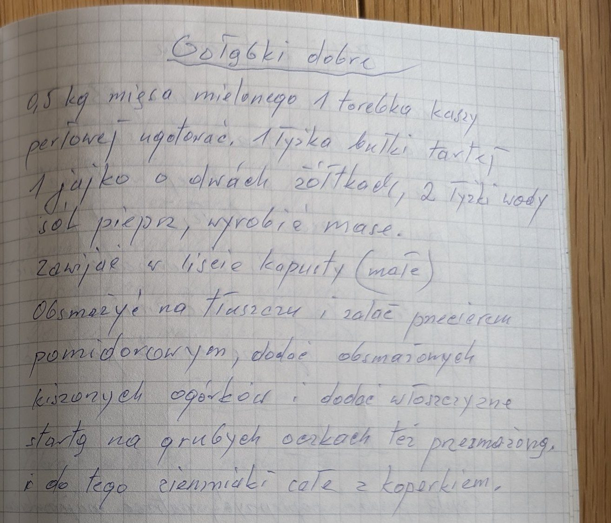

Gołąbki dobre


Składniki
- 0,5 kg mięsa mielonego
- 1 torebka kaszy perłowej
- 1 łyżka bułki tartej
- 1 jajko (o dwóch żółtkach)
- 2 łyżki wody
- sól, pieprz
- liście kapusty
- tłuszcz
- przecier pomidorowy
- ogórki kiszone
- włoszczyzna
- ziemniaki, koperek
Przygotowanie
- Ugotować kaszę perłową.
- Mięso, kaszę, bułkę tartą, jajko, wodę, sól i pieprz wyrobić na masę.
- Zawijać w liście kapusty – małe gołąbki.
- Obsmażyć na tłuszczu i zalać przecierem pomidorowym.
- Dodać obsmażone ogórki kiszone i przesmażoną włoszczyznę startą na grubych oczkach.
- Podawać z całymi ziemniakami z koperkiem.
Oryginalny zapis
Gołąbki dobre 0,5 kg mięsa mielonego 1 torebka kaszy perłowej ugotować. 1 łyżka bułki tartej 1 jajko o dwóch żółtkach, 2 łyżki wody sól pieprz, wyrobić masę. Zawijać w liście kapusty (małe) Obsmażyć na tłuszczu i zalać przecierem pomidorowym, dodać obsmażonych kiszonych ogórków i dodać włoszczyznę startą na grubych oczkach też przesmażoną. i do tego ziemniaki całe z koperkiem.